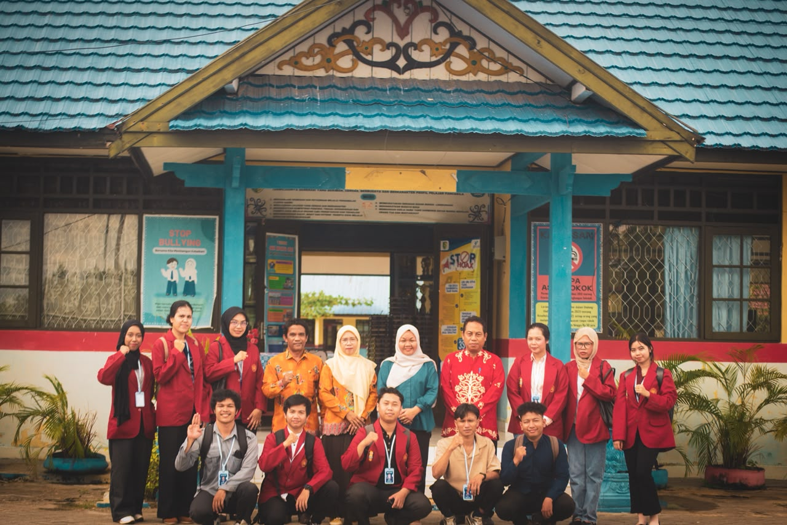
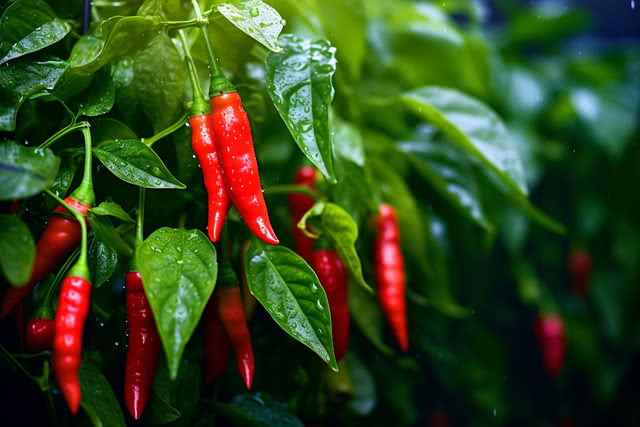
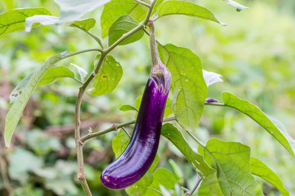

Profil Media Edukasi KKN Kelompok 2

Website informasi Hortikultura
Website informasi digital ini disusun sebagai media edukasi interaktif bagi siswa-siswi SMPN 12 Palangka Raya serta masyarakat Kelurahan Tanjung Pinang, Kecamatan Pahandut. Melalui portal ini, pembaca dapat mengenal profil, kandungan gizi, manfaat kesehatan, serta panduan praktis budidaya tiga komoditas pekarangan utama: Tomat, Lombok, dan Terong Ungu.
Pengembang Web: Ahmad Jayadi Putra (Prodi Ilmu Komputer — Anggota Kelompok 2 KKN 51 UMPR)
Lokasi Pengabdian & Dosen Pembimbing
Lokasi Penempatan KKN
Wilayah Kelurahan: Kelurahan Tanjung Pinang, Kecamatan Pahandut, Kota Palangka Raya, Kalimantan Tengah.
Mitra Sekolah: SMPN 12 Palangka Raya.
Dosen Pembimbing Lapangan (DPL)
Nama DPL: Arna Purtina, M.Pd
Unit Pengabdian: Kelompok 2 — KKN Angkatan 51 Tahun 2026
Katalog Informasi Tanaman Pekarangan
Pilih salah satu komoditas hortikultura di bawah ini untuk membaca profil lengkap, kandungan gizi, manfaat kesehatan, serta cara perawatannya:

Tomat (Solanum lycopersicum)
Buah kaya likopen dan vitamin C yang mudah dibudidayakan di polybag maupun pekarangan sekolah.
Baca Profil Tomat
Lombok / Cabai (Capsicum sp.)
Komoditas bumbu dapur bernilai ekonomi tinggi yang kaya kapsaisin dan antioksidan alami.
Baca Profil Lombok
Terong Ungu (Solanum melongena)
Sayuran buah berwarna ungu cerah yang mengandung antosianin tinggi untuk kesehatan jantung dan otak.
Baca Profil Terong UnguSusunan Anggota Kelompok 2 KKN 51 UMPR
Daftar lengkap 15 mahasiswa peserta KKN Angkatan 51 Kelompok 2 di Kelurahan Tanjung Pinang & SMPN 12 Palangka Raya:
| No | NIM | Nama Mahasiswa | Program Studi | Fakultas |
|---|---|---|---|---|
| 1 | 23.31.027068 | Muhammad Ridwan | Agroteknologi | Pertanian dan Kehutanan |
| 2 | 23.31.027069 | Stefania Sesilia Bata | Agroteknologi | Pertanian dan Kehutanan |
| 3 | 23.53.027640 | Mexy Elsyah Reffan | Ilmu Komputer | Bisnis dan Informatika |
| 4 | 23.53.027124 | Erni Yusnita | Ilmu Komputer | Bisnis dan Informatika |
| 5 | 23.53.027125 | Ahmad Jayadi Putra | Ilmu Komputer | Bisnis dan Informatika |
| 6 | 22.61.026003 | Ahmad Faisal Hakami | Kehutanan | Pertanian dan Kehutanan |
| 7 | 22.61.026018 | Nando Eko Maulana | Kehutanan | Pertanian dan Kehutanan |
| 8 | 23.23.027026 | Dea Pratiwi | Pendidikan Guru Sekolah Dasar | Keguruan dan Ilmu Pendidikan |
| 9 | 23.23.027027 | Tri Wibowo | Pendidikan Guru Sekolah Dasar | Keguruan dan Ilmu Pendidikan |
| 10 | 22.22.025660 | Diwi Astuti | Pendidikan Ekonomi | Keguruan dan Ilmu Pendidikan |
| 11 | 23.22.027048 | Puput Puji Rahayu | Pendidikan Ekonomi | Keguruan dan Ilmu Pendidikan |
| 12 | 23.24.027255 | Muhammad Zaidatul Nasuha | Pendidikan Teknologi Informasi | Bahasa, Ilmu Pengetahuan dan Teknologi |
| 13 | 23.24.027256 | Nur Indah Aprilia Putri | Pendidikan Teknologi Informasi | Bahasa, Ilmu Pengetahuan dan Teknologi |
| 14 | 23.54.028064 | Rahmawati | Sistem Informasi | Bisnis dan Informatika |
| 15 | 23.54.027655 | Juni Anggitasari | Sistem Informasi | Bisnis dan Informatika |